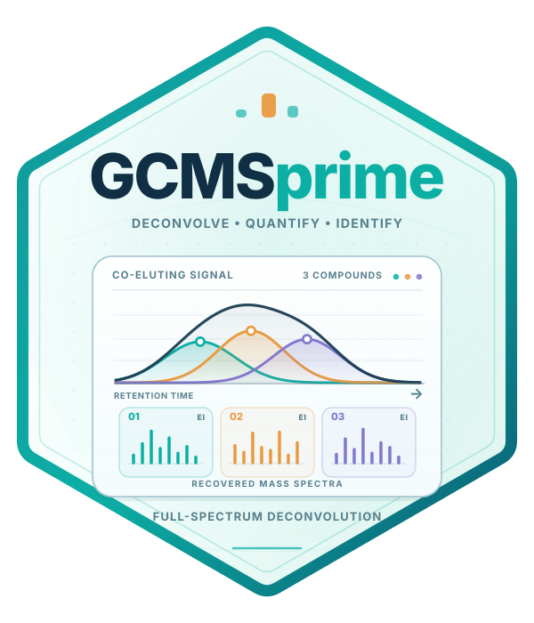

Retention indices and spectral identification
Source:vignettes/articles/identification-theory.Rmd
identification-theory.RmdDeconvolution estimates a compound’s elution profile and spectrum. Identification then combines two kinds of evidence: when the compound elutes relative to an alkane ladder, and how closely its spectrum resembles a reference. GCMSprime first filters candidates by retention index and column class, then ranks their spectral agreement. The library-search tutorial gives the executable workflow.
Identification algorithm
- Identify informative alkane peaks from their diagnostic fragment series and molecular-ion evidence; retain an increasing carbon-number sequence.
- Estimate a narrow-peak width curve and calculate comparable onset-based timing coordinates for standard and sample compounds.
- Fit a smooth monotone map from these coordinates to alkane indices.
- Restrict references to the chosen phase class and RI tolerance. Retain provenance for measured, predicted or explicitly assigned column classes.
- Restrict each reference to the query’s acquired mass bins and calculate the requested spectral distances, optional ion weights and count convention.
- Return the best
n_matchesper method, with RI differences and spectral diagnostics. Add tentative annotations to the unchanged factorization.
Alkane identification and RI calibration
The standard is identified using the alkyl-fragment series at m/z 43, 57, 71, 85, 99 and 113, together with the molecular ion at M=14c+2 for an n-alkane with c carbons. The molecular-ion signal is corrected for the carbon-13 isotope contribution of the neighbouring alkyl ion. Minimum molecular-ion evidence and fragment-series abundance screen candidates; a maximum-weight increasing carbon-number sequence resolves duplicate maxima and inconsistent assignments. Supply the known carbon range when available. All candidates and their acceptance decisions are retained for inspection.
The retention coordinate follows
t^\star=t_{\mathrm{onset}}+\frac{w_{\mathrm{small}}(t_{\mathrm{onset}})}2.
Onset is the leading crossing at 1% of the background-corrected peak
height. The local calibrated narrow-peak PSF supplies the full width at
the same 1% height. Pass it through psf=fit$psf_standard; a
time-varying PSF gives a smoothly varying local duration. If no PSF is
supplied, a smooth lower envelope of the standard peak widths estimates
the small-peak duration. This reduces the influence of overloaded or
tailing peaks on the retention coordinate. Both standard peaks and
recovered sample profiles use this timing convention. The
relative-height fraction is configurable through
control=list(fraction=.01).
A natural cubic spline interpolates the verified alkane coordinates
t^\star_c and their indices 100c, with zero second derivatives at the two
boundary anchors. If the natural spline would decrease between anchors,
monotone cubic interpolation preserves their order and still passes
exactly through them. Both the standard and sample coordinates use the
1%-height onset plus half the local narrow-peak width measured at the
same height. Predictions outside the accepted standard range remain
unassigned by default; optional linear extrapolation uses the boundary
slopes and is flagged in the exports. Verified anchors can be supplied
directly, including a narrow_width column when timing
fitted profiles.
cal$anchors[, c("carbon", "apex", "start", "narrow_width",
"retention_time", "RI", "residual")]
cal$candidates
predict(cal, c(10, 20, 30))This smooth calibration extends the alkane-index construction of van den Dool & Kratz (1963). NIST describes the standard RI conventions. Use a ladder acquired with the sample’s column and chromatographic programme.
The Excel Run sheet records the width source and timing convention.
GCMSdeco() reuses its stored standard PSF automatically
when identification is requested.
Column-specific retention constraints
phase="DB1", "DB5" and "DBWAX"
select nonpolar, semi-standard nonpolar and polar RI classes. Only
references satisfying
|I_{\mathrm{sample}}-I_{\mathrm{reference}}|\leq\texttt{ri\_tolerance}
are scored. The closest RI measurement is used when a reference has several measurements on the selected phase class. Predicted RI records retain their provenance in the match table. Uncalibrated queries and spectra without eligible references remain visible in the query diagnostics.
MSP exports sometimes contain RI values without a column class. These
remain unassigned to a phase. If the library’s documentation establishes
their column class, pass, for example, unknown_phase="DB5"
explicitly. ri_tolerance=Inf requests spectral-only
searching. It is useful for evaluating spectral scores separately from
RI filtering.
NIST/OpenChrom comment summaries such as
SemiStdNP=1000 StdNP=990 StdPolar=1300 retain their DB5,
DB1 and DBWAX column classes during import. Slash-delimited uncertainty
summaries remain available in the raw RI value. For an explicitly
justified benchmark assignment, unknown_phase="DB5" also
admits unlabelled RI values. These matches carry
ri_assumed=TRUE, and the Excel and MSP reports state the
assignment. References with missing RIs remain excluded from a
constrained search.
Spectral comparisons and angular distance
For acquired-bin ion vectors a,b, let N=\sum a_j, p=a/N and q=b/\sum b_j. References are restricted to the query’s acquired mass bins, including bins with zero query intensity. Let w_j\geq0 denote optional ion weights, with w_j=1 by default.
Weighted cosine similarity is
C_w(a,b)=\frac{\sum_j w_j a_jb_j} {\sqrt{\sum_jw_ja_j^2}\sqrt{\sum_jw_jb_j^2}}.
cosine returns distance 1-C_w^2. stein_scott applies the
same calculation after transforming intensities to I^{0.6}(m/z)^3, following Stein & Scott
(1994) and Kim et
al. (2012).
angular and stein_scott_angular instead
return the corresponding angle
\theta_w=\arccos C_w.
With fixed positive weights, this is geodesic distance between the
unit vectors obtained from \sqrt w\,a
and \sqrt w\,b, with the Stein–Scott
transform added when requested. It satisfies the triangle inequality.
Zero weights omit ions, and a nonzero weighted norm is required. Since
intensities are nonnegative, 0\leq\theta_w\leq\pi/2. Angular distance
ranks references in the same order as its cosine counterpart: the
geometric metric property changes, while retrieval accuracy stays the
same. The native search shares the ranking key, avoiding extra rounding
ties from acos().
w <- library_ion_weights(lib)
matches <- library_search(fit, lib, calibration=cal, phase="DB5",
ri_tolerance=30, method=c("angular", "stein_scott_angular"),
ion_weights=w, n_matches=5)Probability distances and sample counts
hellinger uses the weighted square-root distance
H_w(p,q)=\sqrt{\frac{1}{2W}\sum_jw_j(\sqrt{p_j}-\sqrt{q_j})^2}, \qquad W=\max_jw_j.
For r=(p+q)/2, define the weighted Jensen–Shannon divergence
J_w(p,q)=\frac12\sum_jw_j\left[p_j\log\frac{p_j}{r_j} +q_j\log\frac{q_j}{r_j}\right].
jensen_shannon returns \sqrt{J_w/(W\log2)}. Zero contributions use
0\log0=0. The common bound W puts these probability distances on a 0–1
scale.
MSP libraries generally provide relative intensities, with unknown
original ion totals. The default reference_count="auto"
uses an explicit Pseudocount/Ion_total tag
when supplied; otherwise it assigns the reference the same total as the
sample spectrum. reference_count="query" always uses this
balanced convention, and "library" uses the stored library
intensity scale.
For effective reference total M, the multinomial divergence is
D_w=2\sum_jw_j\left[Np_j\log\frac{p_j}{u_j} +Mq_j\log\frac{q_j}{u_j}\right], \qquad u=\frac{Np+Mq}{N+M}.
With M=N, it simplifies to
\boxed{D_w=4N J_w(p,q).}
Thus balanced multinomial deviance has the same ranking as weighted Jensen–Shannon, with its absolute scale determined by the sample’s retained pseudocount. At a fixed N, it is symmetric in the spectral shapes. Each ion contributes a nonnegative Jensen gap. Nonconstant weights give an importance-weighted composite divergence; uniform weights and known totals give the ordinary multinomial likelihood-ratio statistic. Native evaluation uses nonnegative scalar gaps and a local series near equality, avoiding cancellation amplified by large counts.
query_total preserves the sample total;
library_total records the reference’s stored/restored
total. reference_total and reference_count
show the effective comparison convention, and
library_mass_coverage records acquisition coverage. For an
L1-normalized matrix, supply its original totals through
pseudocount=. A GCMSdeco fit supplies them
automatically. Explicit count tags also preserve totals through MSP
export and re-import.
Scores run from 0 to 1000, with larger values better. Angular scores are 1000(1-2\theta/\pi); distances remain in radians. Probability and count-based scores follow the definitions in library_search(). Compare scores within a method and weighting convention.
Ion uniqueness weights
library_ion_weights() computes smoothed inverse-document-frequency weights. If L nonempty reference spectra are available and d_j contain ion j,
w_j\propto\left[1+\log\frac{L+1}{d_j+1}\right]^\alpha.
Weights are normalized to mean one. An ion is counted when it reaches
at least 1% of the acquired-bin base peak; min_relative
controls this threshold. power sets \alpha, default 1. For cosine matching,
power=2 corresponds to multiplying spectral amplitudes by
the usual inverse-document-frequency factor. All search methods accept
the same reusable weight vector.
w <- library_ion_weights(lib, mass=33:550, min_relative=.01, power=1)
attr(w, "frequency")
hits <- library_search(fit, lib, calibration=cal, phase="DB5",
method=c("multinomial", "angular"), ion_weights=w,
reference_count="query", n_matches=5)Frequency estimation reads SQLite records in bounded batches and uses native OpenMP counts. Compute the vector once per reference catalogue and reuse it for every sample. Named custom vectors are also accepted; unspecified masses retain weight one. Frequency-dependent weighting has also been studied for MS/MS library annotation, including enhancement of frequently observed ions. The inverse-frequency option here emphasizes ion rarity, and its benefit is checked directly on EI spectra.
Accuracy and speed
The benchmark draws 500 MoNA query spectra from distinct InChIKey or CAS groups, split into 250 development and 250 validation queries. Query records and near-duplicate same-identity reference shapes are removed at a normalized L1 difference of 0.05 or less. The remaining library contains 19,066 nonempty reference spectra over nominal masses 33–550. Ion frequencies are computed on those references. RI filtering is disabled to measure the contribution of the spectral scores alone.
Entries are percentages for correct first match / correct
within the top five on the 250 validation queries. IDF and IDF²
use a 1% presence threshold, with power=1 and
power=2 respectively.
| Method | Uniform weights | IDF | IDF² |
|---|---|---|---|
| Stein–Scott / Stein–Scott angular | 57.2 / 68.4 | 57.2 / 65.6 | 56.8 / 65.6 |
| Cosine / angular | 43.6 / 62.4 | 44.8 / 62.0 | 44.8 / 61.2 |
| Hellinger | 49.2 / 68.8 | 50.8 / 70.0 | 52.4 / 70.4 |
| Jensen–Shannon / balanced multinomial | 49.2 / 68.8 | 51.2 / 71.2 | 51.6 / 70.8 |
In this comparison, Stein–Scott with uniform weights has the best first-match rate (57.2%). Jensen–Shannon / balanced multinomial with IDF weights has the best top-five rate (71.2%). Using the stored library intensity totals as multinomial counts gives 11.6% first-match and 20.8% top-five recovery. Balancing the totals to the query reduces this scale effect. The angular metrics reproduce their corresponding cosine rankings.
| Method | Search time |
|---|---|
| Stein–Scott | 0.53 s |
| Cosine | 0.41 s |
| Angular | 0.42 s |
| Stein–Scott angular | 0.54 s |
| Hellinger | 0.42 s |
| Jensen–Shannon | 2.05 s |
| Balanced multinomial | 2.01 s |
Search times are medians of three runs for all 500 queries, with IDF weights and eight OpenMP threads on an Intel Core i9-11950H. They include preparation of the candidates from an imported in-memory library. Import and the 0.09 s reusable IDF calculation are separate. The benchmark script accepts a MoNA MSP file directly. The run metadata and aggregate results identify the source snapshot and retain the replicate timings.
Retention-index conventions and interpretation
For temperature-programmed GC, the conventional adjacent-alkane index
is linear in retention time. Isothermal Kováts indices use adjusted log
retention times. These conventions and column metadata are summarized by
NIST.
GCMSprime’s smooth calibration uses its onset-based coordinate
consistently for standards and resolved sample profiles, with alkane
targets 100 * carbon.
A spectral score expresses agreement under its stated transformation and weighting. The reported best matches are tentative compound annotations; reference standards, diagnostic chemistry and the chromatographic programme provide additional identification evidence. In multisample fits, consensus IDs link occurrences; each occurrence can use its own standard-derived RI.